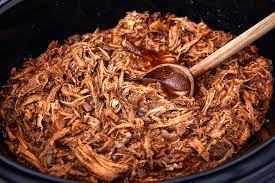

Pulled Pork Recipe

Description
This delicious pulled pork recipe has been a regular in my house and of anyone who has tasted it. It can be mixed with BBQ sauce or enjoyed with it's own juices.
Ingredients
- Pork Shoulder
- 4 White Onions
- 4 Cloves of Garlic
- 1 cup of chicken broth
- Dark Brown Sugar
- Chilli Powder
- Cumin
- Cinnamon
- Kosher salt
Steps
- Strip the skin and excess fat from the pork shoulder and pat dry.
- Slice the four red onions and the garlic and place at the bottom of the slow cooker.
- Mix the sugar, salt and spices together for the rub.
- Rub into the meat.
- Add one cup of chicken broth to the slow cooker.
- Add the pork shoulder to the slow cooker.
- Cook for 6-8 hours on high, or 8-10 hours on medium.